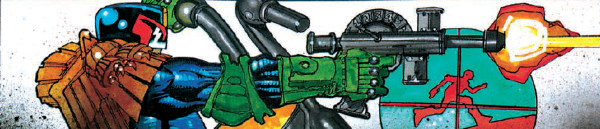

The idea of turning Dredd up to 11 seems odd, as he's already quite OTT, but here the (leather, studded) gloves are off in a series of reprints from the pages of Rock Power!
Art by Simon Bisley
| Story Title | Parts | Pages | w indicates a wraparound coverCovers | Year(s) | Issues | Writer | Artist | Colourist | Letterer |
|---|---|---|---|---|---|---|---|---|---|
| A Mega-City Primer | 1 | 6 | 0 | 1991 | M1.14 | Alan Grant John Wagnervarious | Simon Bisley | <-- | Tom Frame |
| Rock On, Tommy Who? | 1 | 6 | 0 | 1991 | M1.16 | Alan Grant John Wagnervarious | Simon Bisley | <-- | Tom Frame |
| Chicken Run | 1 | 6 | 0 | 1992 | M1.17 | Alan Grant John Wagnervarious | Simon Bisley | <-- | Tom Frame |
| The Man Who Killed Judge Dredd | 1 | 6 | 0 | 1992 | M1.18 | Alan Grant John Wagnervarious | Colin MacNeil | <-- | Tom Frame |
| The Legend of Johnny Biker | 1 | 6 | Simon Bisley 1 | 1992 | M1.19 | Alan Grant John Wagnervarious | Simon Bisley | <-- | Tom Frame |
No supertitle.The Return of Johnny Biker | 1 | + 1 credit pages6 | Dean Ormston 1 | 1992 | M2.13 | Alan Grant John Wagnervarious | Dean Ormston | <-- | Tom Frame |
| The Fan | 1 | + 1 credit pages6 | 0 | 1993 | M2.19 | Alan Grant John Wagnervarious | John Hicklenton | Keith Page | Tom Frame |
| Too Much Monkee Business | 1 | + 1 credit pages6 | 0 | 1993 | M2.21 | Alan Grant John Wagnervarious | John Hicklenton | Keith Page | Tom Frame |
| The Most Dangerous Guitar in the World | 1 | + 1 credit pages6 | 0 | 1993 | M2.22 | Alan Grant John Wagnervarious | John Hicklenton | Keith Page | Tom Frame |
| Mort Rifkind Rises Again | 1 | + 1 credit pages6 | 0 | 1993 | M2.23 | John Smith | John Hicklenton | Keith Page | Tom Frame |
| The Big Hit | 1 | + 1 credit pages6 | 0 | 1993 | M2.24 | John Smith | John Hicklenton | Keith Page | Tom Frame |
| Graceland | 1 | + 1 credit pages6 | 0 | 1993 | M2.25 | David Bishop | John Hicklenton | Keith Page | Tom Frame |
| Monkey Beat | 2 | + 2 credit pages13 | M2.35: John Hicklenton 1 | 1993 | M2.34-M2.35 | John Smith | John Hicklenton | Keith Page | Gordon Robson |
| Kiss Of Death | 1 | + 1 credit pages6 | 0 | 1993 | M2.36 | Jim Alexander | John Hicklenton | Keith Page | Gordon Robson |
| Ironfist - Live at the Mega-Dome | 1 | + 1 credit pages6 | Greg Staples 1 | 1994 | M2.61 | Alan Grant John Wagnervarious | Simon Bisley | <-- | Tom Frame |
| The Night Before Christmas | 1 | + 1 credit pages6 | 0 | 1994 | M2.62 | Alan Grant John Wagnervarious | Simon Bisley | <-- | Tom Frame |
| The Great Arsoli | 1 | 6 | 0 | 1996 | M3.15 | Alan Grant John Wagnervarious | Simon Bisley | <-- | unknown |
| Bimba | 1 | 6 | 0 | 1996 | M3.17 | Alan Grant John Wagnervarious | Simon Bisley | <-- | Tom Frame |
| The Ballad of Toad McFarlane ('Cept It's Not a Ballad) | 1 | 5 | 0 | 1997 | M3.33 | Alan Grant John Wagnervarious | Brendan McCarthy | <-- | Tom Frame |
| >> Posters << | |||||||||
| "Far Out!" | 1 | 1 | 0 | 1997 | M3.33 | n/a | Brendan McCarthy | <-- | n/a |
| year | episodes | pages |
| 1984 | 0 | 0 |
| 1985 | 0 | 0 |
| 1986 | 0 | 0 |
| 1987 | 0 | 0 |
| 1988 | 0 | 0 |
| 1989 | 0 | 0 |
| 1990 | 0 | 0 |
| 1991 | 2 | 12 |
| 1992 | 4 | 24 |
| 1993 | 9 | 55 |
| 1994 | 2 | 12 |
| 1995 | 0 | 0 |
| 1996 | 2 | 12 |
| 1997 | 1 | 5 |
| 1998 | 0 | 0 |
| 1999 | 0 | 0 |
| 2000 | 0 | 0 |
| 2001 | 0 | 0 |
| 2002 | 0 | 0 |
| 2003 | 0 | 0 |
| 2004 | 0 | 0 |
Comic strip data (excludes other content):